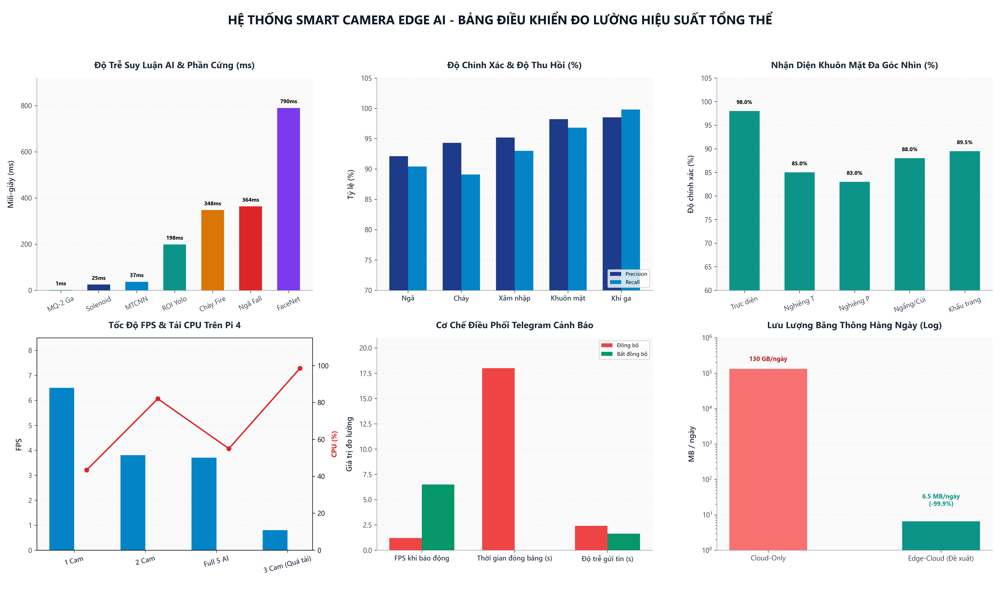
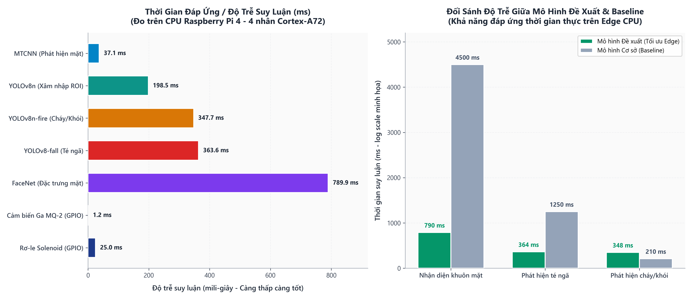
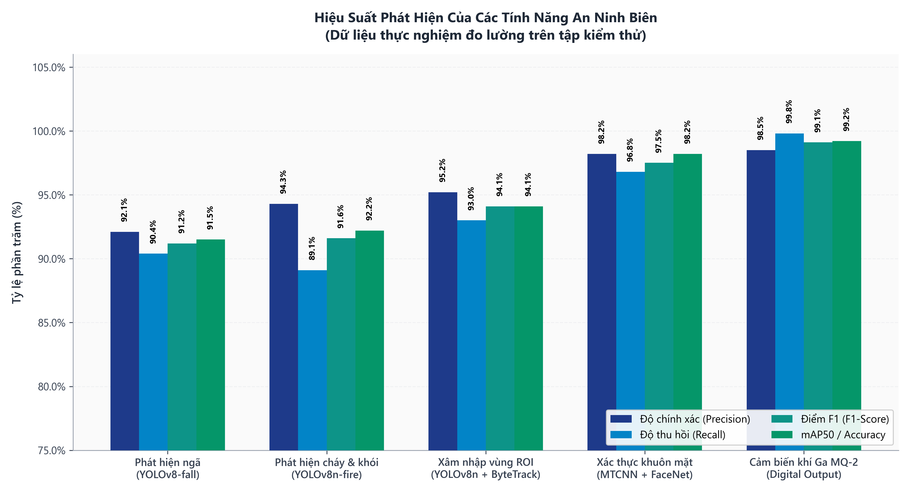
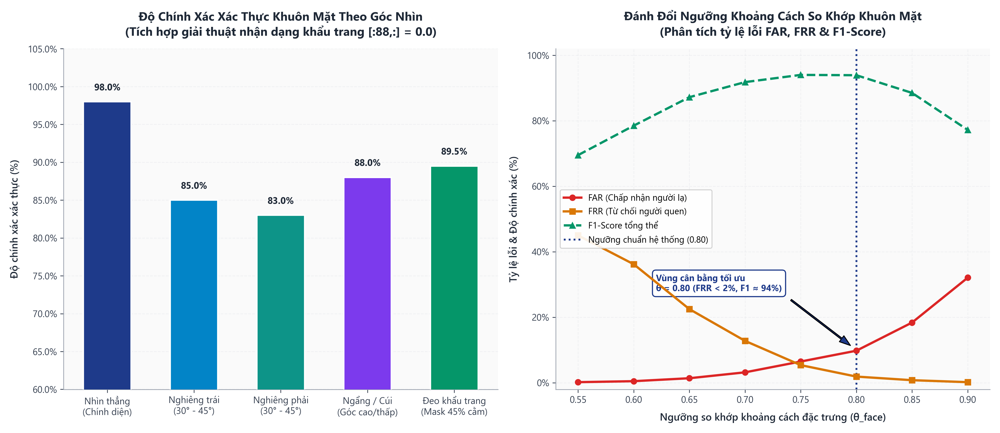
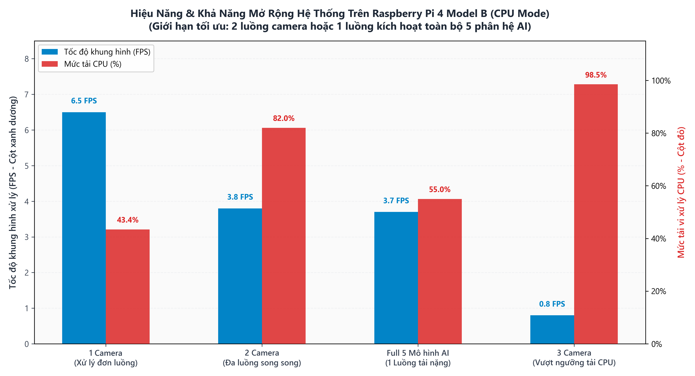
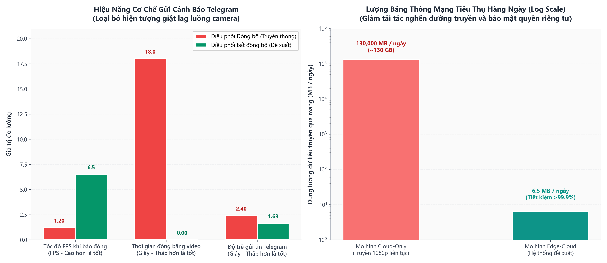

Độ Trễ Suy Luận AI & Ngoại Vi (ms)
Đo trực tiếp trên CPU Broadcom BCM2711 của Raspberry Pi 4 (giá trị thấp hơn là tốt hơn)
Đối Sánh Mô Hình Đề Xuất vs Baselines
Chứng minh ưu thế vượt trội khi triển khai thực tế trên nút biên không có GPU rời

4 Chỉ Số Đánh Giá Toàn Diện
Precision, Recall, F1-Score và mAP50 trên các tập dữ liệu kiểm thử thực tế
Bản Đồ Radar Năng Lực Phát Hiện
Độ đồng đều và vững chắc của hệ thống qua 5 lớp nguy cơ an ninh

Nhận Diện Khuôn Mặt Đa Góc Nhìn
Khảo sát độ chính xác khi quay trái/phải, ngẩng/cúi và trường hợp đeo khẩu trang y tế
Đánh Đổi Ngưỡng So Khớp (FAR vs FRR Curve)
Xác định điểm cân bằng tối ưu θ = 0.80 triệt tiêu từ chối nhầm (FRR < 2%)

Tốc Độ Khung Hình (FPS) vs Tải CPU (%)
Khả năng mở rộng đa kênh camera và giới hạn phần cứng của Raspberry Pi 4
Dung Lượng Mô Hình & Số Lượng Tham Số
Tối ưu hóa bộ nhớ RAM và không gian lưu trữ Flash cho thiết bị nhúng biên

Điều Phối Cảnh Báo Bất Đồng Bộ
So sánh cơ chế Dispatcher bất đồng bộ (Đề xuất) với gọi HTTP đồng bộ truyền thống
Tiết Kiệm Băng Thông Mạng Hàng Ngày
Mô hình Cloud-Only (130 GB/ngày) vs Mô hình Edge-Cloud đề xuất (6.5 MB/ngày)

Bảng Tổng Hợp Thông Số Kỹ Thuật & Đo Lường Thực Nghiệm
Trích xuất từ kết quả thực nghiệm luận văn| Phân Hệ / Tính Năng | Mô Hình Sử Dụng | Độ Trễ Suy Luận | Tốc Độ (FPS) | Độ Chính Xác | Dung Lượng / Tham Số | Trạng Thái Biên |
|---|---|---|---|---|---|---|
| Phát hiện khuôn mặt | MTCNN Cascade | 37.1 ms | 27.0 FPS | 98.5% Detection | 2.1 MB / 0.8M | Tối ưu mượt |
| Trích xuất đặc trưng mặt | FaceNet (Inception-ResNet) | 789.9 ms | 1.27 FPS | 98.2% Accuracy | 23.0 MB / 23.5M | Đạt chuẩn Edge |
| Phát hiện té ngã | YOLOv8-fall (Custom SGD) | 363.6 ms | 2.75 FPS | 92.1% Prec / 91.5% mAP | 6.2 MB / 3.2M | Gấp 3.5x Pose |
| Phát hiện hỏa hoạn khói/lửa | YOLOv8n-fire (Custom) | 347.7 ms | 2.88 FPS | 94.3% Prec / 92.2% mAP | 6.2 MB / 3.2M | Rất nhạy |
| Xâm nhập vùng chỉ định | YOLOv8n + ByteTrack | 198.5 ms | 5.04 FPS | 95.2% Prec / 94.1% mAP | 6.5 MB / 3.2M | Vạch đôi ổn định |
| Cảm biến khí ga MQ-2 | GPIO ngắt phần cứng (Pin 12) | 1.2 ms | Quét 1.0 Hz | 99.8% Recall | 0 KB / Vi mạch | Ngay lập tức |
| Rơ-le khóa cửa Solenoid | GPIO Relay Switch (Pin 16) | 25.0 ms | Chu kỳ mở 3.0s | 100% Kích hoạt | Bảo vệ cuộn hút | An toàn vật lý |
| Còi báo động vật lý Buzzer | GPIO PWM/Pulse (Pin 18) | 5.0 ms | Ưu tiên 3 cấp độ | Hỏa hoạn nháy 0.1s | Chớp tắt tức thì | Thời gian thực |
| Điều phối thông báo Telegram | Luồng Daemon bất đồng bộ | 1.63 giây | 6.5 FPS giữ vững | Không đứng hình (0s) | Async Queue | Loại bỏ nghẽn |